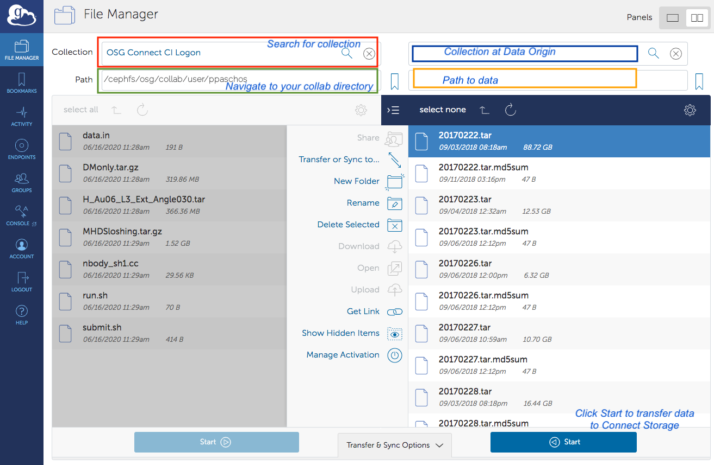

Data Management
This section provides a list of important information on how you can manage your data on the Snowmass21 login node login.snowmass21.io.
Filesystems
The Snowmass Connect service has four filesystems you should be aware of:
- Home directory. Your home directory,
/home/<user_id>, has 50GB of storage available. It is recommended to use it for storing scripts, submission files and small size data. Large input files for jobs on the grid should not be stored here. - Local private storage in
/work/<user_id>. Each user directory has a quota of 5 TB to temporarily store data and build your own submission pipeline to the OSG. It can also be used as your private work area for local analysis or processing jobs on the login node. - Local shared storage in
/project/data. This directory is for you to place data that needs to be shared with other users. Users can write there any data needed by multiple users and different jobs on the grid. - CephFS storage ("Stash") is accebible from the login node at
/collaband is intended for datasets larger than 1GB each for jobs or for distribution to external institutions over http or Globus. There are two relevant subdirectories in/collab:- For private user data:
/collab/user/<user_id>. Each user directory has a 1 TB quota. - For shared data the Snowmass21 project members:
/collab/project/snowmass21/data. This is a 50TB shared storage allocation. - Note that the
/collab/user/<user_id>location is available directly from remote nodes to write output with the stashcp method - for large output files. The project space (/collab/project/snowmass21) is not accessible for direct write. - Note also that using HTCondor for transfering files back from the worker nodes will use the NFS mount on the login node if data are directed to the
/collablocations. Performace for large file writes will has less performance when compared to the direct method (stashcp).
- For private user data:
Transferring data
You can transfer data to Snowmass21 Connect using any of the three following methods:
-
scp. For example:
scp -r <file_or_directory> <user_id>@login.snowmass21.io:/work/<user_id>/.will copy a file or a directory from your local machine to your user directory in local storage. The ssh-keys used for your profile on the Snowmass Connect portal must stored on the local machine. -
rsync. For example:
rsync -avz -e "ssh -o StrictHostKeyChecking=no -o UserKnownHostsFile=/dev/null" --progress test.transfer <user_id>@login.snowmass21.io:dump/will copy thetest.transferfile in the/home/<user_id>/dump/directory. If the directory does not exist, it will be created. As inscpthe ssh-keys used for your profile on the Snowmass Connect portal must stored on the source machine. -
Globus Connect can be used to transfer files to/from stash storage only. Instructions on how to set up Globus Connect Personal can be found here. Access to the stash storage endpoint is enabled by authenticating against the Globus collection "OSG Connect CI Logon" using the GLobus Connect client. You can search for the collection by name in the search bar of the File Manager.
In order to access the stash storage on the Snowmass login node via Globus online, you must have a certificate issued by CILogon. To obtain one:
- Logon with your institutional credentials at http://cilogon.org
- Select "Create a Password Protected Certificate". Enter a password and download your encrypted certificate, named usercred.p12. The certificate can be obtained by using the openssl pcks12 command as:
openssl pkcs12 -in [your-cert-file] -clcerts -nokeys -out usercert.pem - Email paschos@uchicago.edu the output of the following command which will print out your DN (Distinguish Name):
openssl x509 -in usercert.pem -noout -subject
Once your DN has been entered in the user access list you will be able to access the OSG Connect CI Logon collection with the Globus Connect client by
validating with your institution credentials. Navigate to the OSG Snowmass21 Collaborations Connect storage by typing in the Path box /cephfs/osg/collab. You can then navigate to your user directory as shown in the example below:

Shown in the image above are two possible destinations for the data.
- Navigate to
/cephfs/osg/collab/project/snowmass21if data are to be shared by multiple users. - Navigate to
/cephfs/osg/user/<user_id>if data are for the exclusive use of a single user. In both cases, users can create subdirectories and organize content by either using the Globus client interface or from the login.snowmass21.io node.
On the right panel of the Globus Connect client tool you can search and connect to another collection. The latter can be your own laptop/server or a collaboration end point that has provided a Globus Connect door for the researchers to use. To transfer files you can select the list files from your local computer and then select Start. To transfer files out simply reverse the direction of the process.
Important: You can not access home and work directories on the login server over the Globus door. Since you have access to the /stash/collab directory, you can login to login.snowmass21.io and move or copy files over to your home or work directory.
Data Access for Open Science Pool jobs
There are four methods available:
- HTCondor File Transfer. This method is recommended for the majority of computational workflows running on the OSG. Users can employ this method if the total size of the input data per job does not exceed 1 GB. In addition, OSG recommends that the output data per job that need to be transfered back does not exceed 1 GB as well. To enable HTCondor File transfers for your input and output data, insert the following parameters anywhere in your HTCondor submit file:
transfer_input_files = <comma separated files or directories> transfer_output_files = <comma separated files or directories>
This method can leverage any storage location on the Snowmass21 Connect node. However it is recommended that you primarily use /work/<user_id> and avoid /home/<user_id>.
- OSG's StashCache. To use this service, data should be placed either in
/collab/user/<user_id>or/collab/project/snowmass21. This method is recommended for input files larger than 1 GB each or 10 GB total from all input data. The recommended upper limit for the output files to be transfered back from the remote node is 10 GB per job. Users can use the stashcp tool to transfer data from their/collabspace only to the remote host. You can insert the following command in your execution script to transfer data from/collab/user/<user_id>to the local directory on the remote worker node where your job is running:module load stashcache stashcp stash:///osgconnect/collab/user/<user_id>/<input_file> .
To transfer data back to your collab space from the remote node run the following command in your execution script:
stashcp <output_file> stash:///osgconnect/collab/user/<user_id>/<output_file>
Stashcp uses an XrootD client for the file transfers. You can use XrootD directly to access files on stash from a remote node as follows:
xrdcp root://stash.osgconnect.net:1094//osgconnect/collab/project/snowmass21/<directory>/file .
For writes back from the job:
xrdcp <file> root://stash.osgconnect.net:1094//osgconnect/collab/project/snowmass21/<diretory>/<file>
Note: The local filesystem on the snowmass node is not accessible by stashcp or xrdcp. You will need to use HTCondor transfer for files stored there.
Data can also be accessed over cvmfs here:
/cvmfs/stash.osgstorage.org/osgconnect/collab/project/snowmass21/data
-
If the filesize of each input dataset exceeds 10 GB then an alternative method for transfers is the GridFTP protocol using the gfal-copy tool. Please reach out for a consultation to discuss if your workflow can benefit from access to a GridFTP door.
-
Transfers over HTTP. Files stored in the shared namespace,
/collab/project/snowmass21are public and also accessible via HTTP. To access datta there you can use linux tools like wget as shown in the following example:wget http://stash.osgconnect.net/collab/project/snowmass21/<file_name>
You can insert a line like the one above in your execution script to download datasets on the remote worker node where your job is running. Alternatively, you can declare those files inside your HTCondor submission script as follows:
transfer_input_files = http://stash.osgconnect.net/collab/project/snowmass21/<file_name>
HTTP based transfers are best for filesizes up to 1GB.